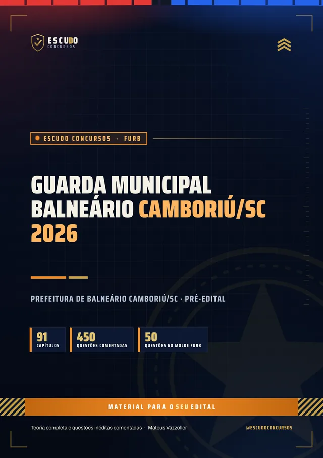
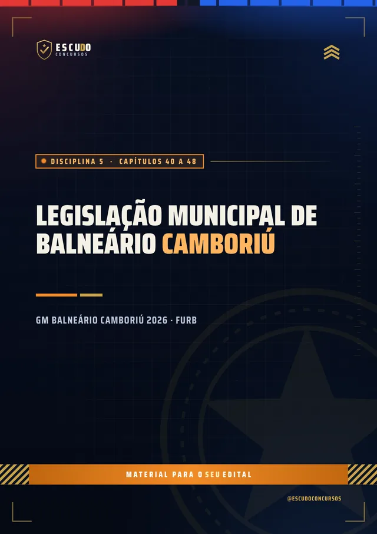
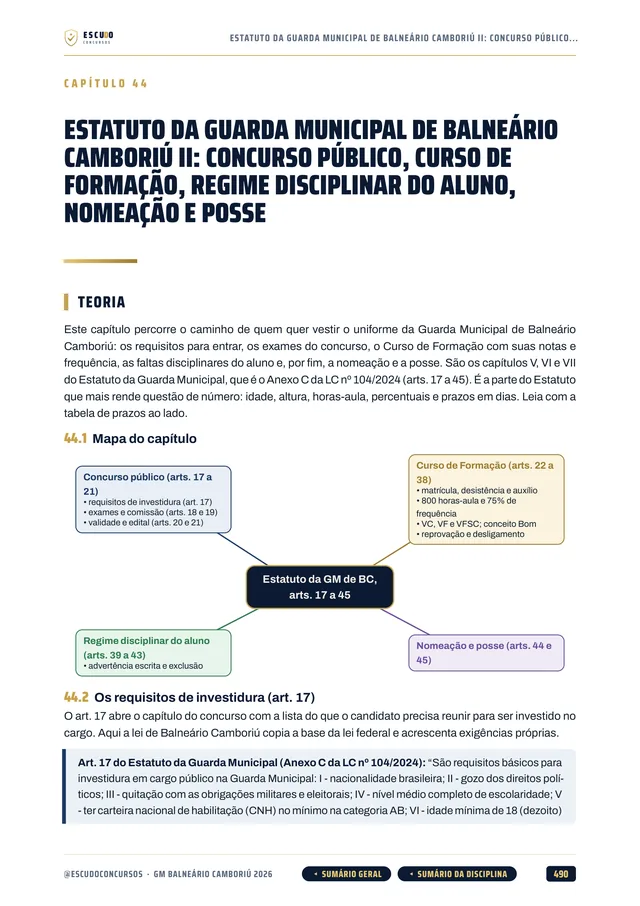
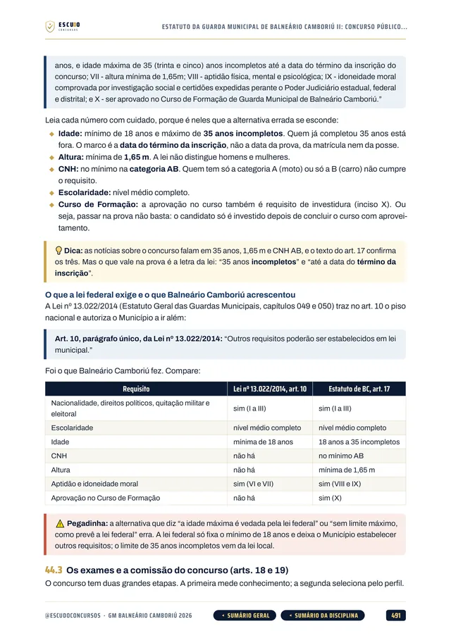
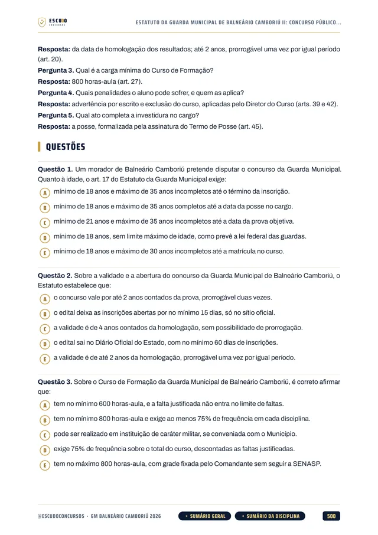
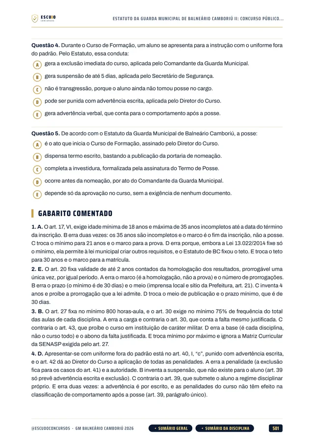
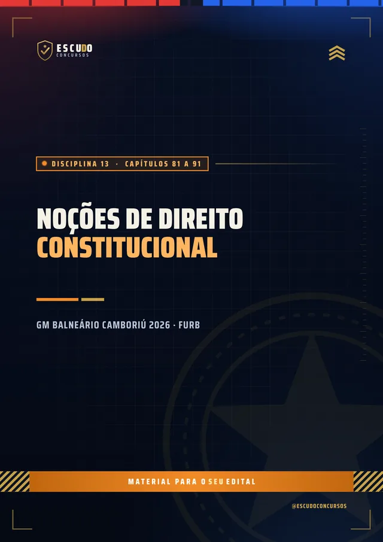
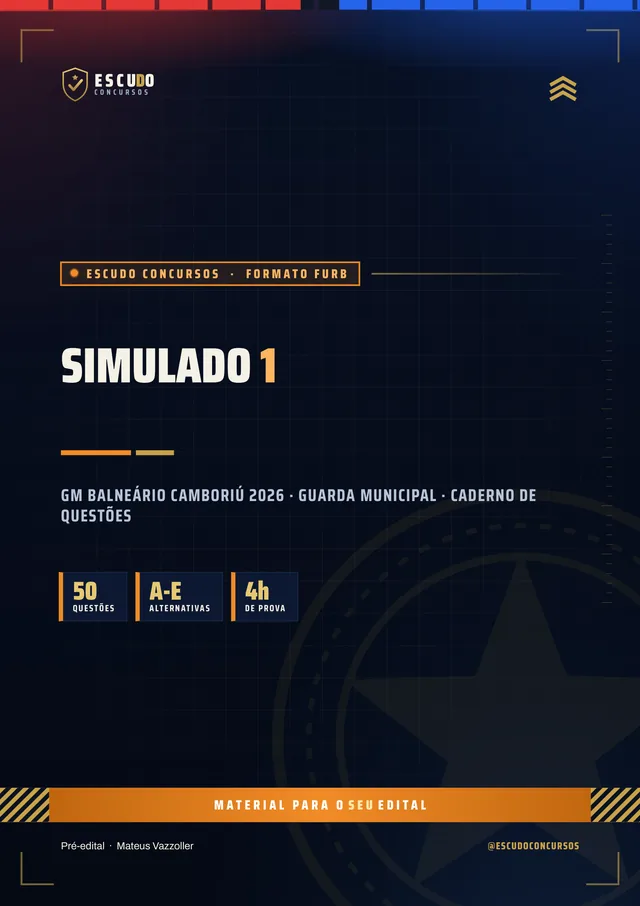

Simulado 1
No meio do caminho
Para medir onde você está e ajustar o estudo enquanto ainda dá tempo.
30 dias após a compra
Material independente, sem vínculo com a Prefeitura de Balneário Camboriú nem com a FURB.


450questões
comentadas
ConcursoGM BC2026 · Guarda
Briefing
Balneário Camboriú criou 90 cargos de Guarda Municipal e contratou a FURB, e o edital ainda não saiu. O seu material cobre Noções de Direito e a Legislação de BC, que somam 60% da prova? Curso feito sobre o molde da última prova da FURB para Guarda Municipal (Itapema, Edital 001/2022), com o Estatuto da Guarda de Balneário Camboriú, questões de 5 alternativas e gabarito comentado.
Pré-edital: baseado no último edital (da FURB para a GM de Itapema, nº 001/2022). Atualizado quando sair o novo
de R$ 47 por 21% OFF
R$37
com o cupom GMBC37 até 31/12/2026. Pelo botão, o cupom já vai preenchido.
R$47
Curso completo, com acesso imediato.
Terreno
O concurso
A Lei nº 5.355, de 14 de outubro de 2026, criou 90 cargos de Guarda Municipal em Balneário Camboriú e levou o quadro a 290 guardas. A Prefeitura contratou a FURB (Fundação Universidade Regional de Blumenau) em outubro e instituiu, em agosto, a comissão que acompanha o concurso. O edital ainda não foi publicado: não há número oficial de vagas imediatas, data de inscrição nem de prova.
Por isso o curso segue o molde da última prova da FURB para o mesmo cargo, a da Guarda Municipal de Itapema, cidade vizinha (Edital 001/2022): 50 questões de 5 alternativas, todas valendo 2 pontos, com mínimo de 60 pontos. Noções de Direito (20 questões) e Legislação (10) somam 60 dos 100 pontos. No lugar das leis de Itapema, entram as de Balneário Camboriú: a Lei Orgânica e o Estatuto da Guarda (Anexo C da LC 104/2024).
Estudar agora pelo molde da banca economiza meses. Quando o edital da FURB sair, o programa será conferido item por item e o curso, ajustado.
| Disciplina | Questões | Capítulos |
|---|---|---|
| Língua Portuguesa | 5 | 15 |
| Noções de Informática | 5 | 10 |
| Noções de Primeiros Socorros | 5 | 3 |
| Noções de Legislação de Trânsito | 5 | 10 |
| Legislação: Lei Orgânica e Estatuto da Guarda de BC, Estatuto Geral das Guardas, ECA, Pessoa Idosa e Pessoa com Deficiência | 10 | 24 |
| Noções de Direito: Administrativo, Penal, Processual Penal e Constitucional | 20 | 28 |
| Mais o capítulo 001, sobre como deve ser a prova e como usar o curso. | 50 | 91 |
Protocolo
O formato
Você estuda lendo, no seu ritmo, pela área de membros da Hotmart ou com os arquivos baixados. O curso foi feito a partir do programa da FURB para Guarda Municipal, disciplina por disciplina, com as leis de Balneário Camboriú tiradas do Diário Oficial dos Municípios de Santa Catarina e a legislação federal conferida no texto oficial vigente em novembro de 2026.
Reconhecimento
Páginas reais do PDF
Toque numa página para ver em tamanho maior.





100% em PDF · Garantia de 7 dias · Pagamento pela Hotmart
Equipamento
O que você recebe
Curso em PDF organizado em 14 módulos (12 pelas disciplinas e 2 de simulado), com 1.169 páginas no padrão visual ESCUDO, para ler no computador, no tablet, no celular ou no app da Hotmart. Não há videoaulas.
91 capítulos pelo programa da FURB: Língua Portuguesa, Informática, Primeiros Socorros, Legislação de Trânsito, Legislação de Balneário Camboriú, Estatuto Geral das Guardas, ECA, Estatuto da Pessoa Idosa, Estatuto da Pessoa com Deficiência e Noções de Direito.
450 questões inéditas com 5 alternativas, de (A) a (E), todas com gabarito comentado: por que a correta está correta e onde erra cada uma das outras quatro.
Legislação de Balneário Camboriú em 9 capítulos: Lei Orgânica (Lei 933/1990), a Secretaria de Segurança e a Guarda (Lei 3.029/2009 e LC 104/2024) e o Estatuto da Guarda Municipal inteiro (Anexo C da LC 104/2024), do concurso e do curso de formação ao regime disciplinar e ao PAD.
Noções de Direito, que valem 20 questões: Direito Administrativo, Penal, Processual Penal e Constitucional em 28 capítulos, mais o Estatuto Geral das Guardas Municipais (Lei 13.022/2014), o ECA e os Estatutos da Pessoa Idosa e da Pessoa com Deficiência.

Teoria com recursos para memorizar: mapa de cada capítulo, esquemas, pegadinhas, quadros de “não confunda”, revisão relâmpago e teste de memória. Navegação clicável: do sumário você vai direto à disciplina e ao capítulo, e volta pelos botões do rodapé.
2 simulados inéditos de 50 questões de 5 alternativas, no formato da FURB, cada um com caderno de comentários. O Simulado 1 vem aos 30 dias e o Simulado 2 aos 60 dias após a compra.

Plano de ação
Área de membros
| Módulo | Conteúdo | Liberação |
|---|---|---|
| M0 Comece aqui | Apresentação + capítulo 001 (como deve ser a prova e como usar o curso). Bônus: PDF completo para baixar e imprimir | Na compra; o PDF completo no 8º dia |
| M1 Língua Portuguesa I | Capítulos 002 a 009 | Na compra |
| M2 Língua Portuguesa II | Capítulos 010 a 016 | Na compra |
| M3 Informática | Capítulos 017 a 026 | Na compra |
| M4 Primeiros Socorros e Trânsito | Capítulos 027 a 039 | Na compra |
| M5 Legislação de Balneário Camboriú | Capítulos 040 a 048 | Na compra |
| M6 Estatutos I: Guardas Municipais e ECA | Capítulos 049 a 057 | Na compra |
| M7 Estatutos II: Pessoa Idosa e Pessoa com Deficiência | Capítulos 058 a 063 | Na compra |
| M8 Direito Administrativo | Capítulos 064 a 071 | Na compra |
| M9 Direito Penal e Processual Penal | Capítulos 072 a 080 | Na compra |
| M10 Direito Constitucional I | Capítulos 081 a 085 | Na compra |
| M11 Direito Constitucional II | Capítulos 086 a 091 | Na compra |
| M12 Simulado 1 | 50 questões, caderno de comentários | 30 dias após a compra |
| M13 Simulado 2 | 50 questões, caderno de comentários | 60 dias após a compra |
Treinamento
Treino no formato da prova
Cada simulado tem 50 questões de 5 alternativas, na divisão da prova da FURB (Português 5, Informática 5, Primeiros Socorros 5, Trânsito 5, Legislação 10 e Noções de Direito 20), com caderno de comentários. O formato será conferido quando o edital sair.
Simulado 1
Para medir onde você está e ajustar o estudo enquanto ainda dá tempo.
30 dias após a compra
Simulado 2
Cobre o programa inteiro de novo, para o seu teste final.
60 dias após a compra
Perfil
Para quem é
Para quem vai prestar a Guarda Municipal de Balneário Camboriú e quer começar já, pelo molde da FURB e pelas leis da cidade, sem esperar o edital e sem perder tempo com assunto que não cai.
Proteção
Você tem 7 dias de garantia pela Hotmart. Se não for o que você esperava, pede o reembolso pela própria Hotmart, dentro do prazo.
Cronograma
Sem surpresa na área de membros
Na compra: todas as disciplinas em PDF, uma por módulo, com a teoria e as questões comentadas. É o curso inteiro, para começar a estudar no mesmo dia.
8 dias após a compra: o PDF completo para imprimir. É o mesmo conteúdo dos módulos num arquivo só, liberado depois da garantia de 7 dias.
Simulado 1: 30 dias após a compra, para medir onde você está no meio da preparação.
Simulado 2: 60 dias após a compra, porque ainda não há data de prova marcada.
O PDF completo e os simulados aparecem bloqueados na área de membros até a data de cada um: não é conteúdo faltando, é a liberação programada.
Instrução
Dúvidas
Não. É um curso 100% em PDF: teoria, questões comentadas e simulados para ler e resolver.
O acesso é imediato depois da confirmação do pagamento, pela área de membros da Hotmart (web ou app). O PDF completo para baixar e imprimir é liberado no 8º dia.
O Simulado 1 é liberado 30 dias após a compra e o Simulado 2, 60 dias após a compra.
Ainda não. A Lei 5.355/2026 criou 90 cargos de Guarda Municipal e a Prefeitura contratou a FURB em outubro de 2026. O curso segue o molde da última prova da FURB para Guarda Municipal (Itapema, Edital 001/2022), com as leis de Balneário Camboriú. Quando o edital sair, o programa será conferido item por item e o curso, ajustado.
Sim, inteiro, em 6 capítulos: o Estatuto é o Anexo C da LC 104/2024, com competências, concurso e curso de formação, carreira, ética, deveres, transgressões, penalidades, sindicância e PAD. Mais 2 capítulos da Lei Orgânica (Lei 933/1990) e 1 da Secretaria de Segurança, com CEFAG, Núcleo de Inteligência e ROMU.
Porque é a última prova da FURB para Guarda Municipal, numa cidade vizinha, e o último concurso da Guarda de Balneário Camboriú foi em 2014, por outra banca. A FURB costuma repetir a estrutura de um concurso para outro: 50 questões em seis blocos, com Noções de Direito e Legislação valendo 60% da prova.
A última prova da FURB para Guarda Municipal teve múltipla escolha com cinco alternativas, de (A) a (E), e uma só correta, e o curso segue esse formato. Quando o edital da FURB sair, o formato será conferido.
Não. As 450 questões de treino e as dos simulados são inéditas, escritas a partir do programa.
Você tem 7 dias de garantia pela Hotmart. Se não for o que você esperava, pede o reembolso.
Missão
GM Balneário Camboriú 2026
de R$ 47 por 21% OFF
R$37
com o cupom GMBC37 até 31/12/2026.
R$47
Curso completo, com acesso imediato.
Material para o SEU edital. ESCUDO Concursos.
Continue estudando